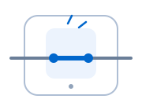
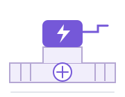
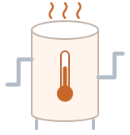

Sapphire Bridge · Exploratory follow-up
Causal Parrots:
causal facts or plausible wording?
Gemma-3-4B-IT still favours the originally plausible effect after the cause is replaced. What would show that its answer depends on the particular cause–effect relation?
See the comparisonThe result in one picture
The cause changed.
The preference remained.
Change the source event · keep the supplied graph structure

closing
source event

motor powered
Keep both effect descriptions · ask about each separately

warming
cooling
See why the graph answer is the same for both effects
In the disconnected example, A → X → B is separate from D → {C, C′}. A reaches neither effect, so the answer is No for both. The connected variant adds paths from B to both C and C′, making both answers Yes. Swapping the source event changes the wording of A while preserving these links.
The measured comparison
A persistent preference.
An uncertain cause-dependent difference.
Averages across 48 family-instances, both graph answers and both presentation orders. These are aggregate results, not scores for the single example above.
| Scenario background | Original causePreference for C over C′ | Substituted causePreference for C over C′ | What does the original cause add?Original − substituted · 95% confidence interval |
|---|---|---|---|
| Scenario background: Included | 3.81 | 3.33 | +0.48[−0.42, +1.46] |
| Scenario background: Removed | 3.29 | 3.13 | +0.16[−0.62, +0.99] |
What the score means. Values are in nats: the Yes-versus-No log-odds for the question about C, minus the same score for C′. A positive value means a higher Yes-score for the originally plausible effect. It is not answer accuracy.
Both difference intervals include zero. They leave the original cause’s additional contribution uncertain; they do not establish equal effects. Removing the scenario background leaves the instructions and worked examples in place.
The method behind the comparison
Ask what the evidence can decide.
-
01 / Observe the preference
Start with the effect.
The originally plausible effect gets a higher Yes-score. That preference alone does not show which relation the model used.
-
02 / Name alternatives
What might produce it?
The specific cause, effect wording, context and presentation order may all contribute. These influences can coexist.
-
03 / Test dependence
Change what might matter.
Swap the cause, reverse target and link order together, and remove the scenario background. On average, a preference remains; its source is still unresolved.
-
04 / Separate explanations
Cross causes and effects.
Make each effect fit one cause but not another. Balance wording and order; agree in advance what difference would matter.
Proposed next test · not yet run
A preference that survives a cause swap still needs an explanation.
This exploratory comparison does not identify a wording mechanism, establish the absence of causal knowledge, or decide the Correlation of Causal Facts conjecture. The next question is whether a balanced cause–effect comparison can distinguish relation-specific sensitivity from a more general preference for the effect description.
Scope, uncertainty & sources
Connection to Causal Parrots
Zečević, Willig, Dhami & Kersting’s Correlation of Causal Facts (CCF) conjecture connects correct causal answers to facts and query–answer correlations encountered during training. This follow-up asks a narrower behavioural question: does the preference depend on the queried cause? These are results from a different, smaller local model, not a replication of the paper’s GPT-3, GPT-4 or Luminous findings.
What was measured
Gemma-3-4B-IT, revision 093f9f388b31de276ce2de164bdc2081324b9767, evaluated locally on MPS in bfloat16, without a chat template. The exploratory comparison uses 1,536 prompts from 48 familiar family-instances in 23 mechanism clusters, with model-assisted plausibility labels. It measures output log-odds; no mechanistic claim follows from this comparison.
What the controls leave open
Cause replacement also changes wording and, in 576 of 768 matched pairs, token length. The substituted cause–effect relations were not independently truth-annotated. Presentation order changes the event list and the corresponding target-ending link order together. These controls do not isolate a single semantic influence.
Trace the evidence
Intervals use 10,000 recipient-cluster bootstrap draws; dependence from reused donors is not separately captured. Local analysis version: 7b726a4. Causal Parrots · TMLR (2023), §§3–4 ↗
Numerical evidence snapshot · Provenance and interpretation notes. No new model runs were performed for this page.
The downloadable snapshot contains aggregate results and provenance; it does not include the underlying 1,536 measurement records or reanalysis code.